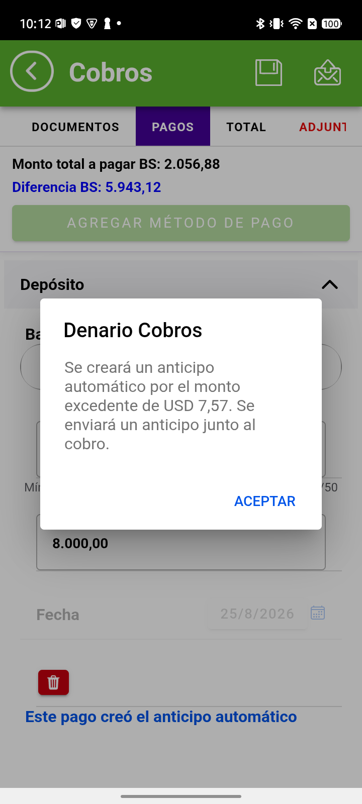
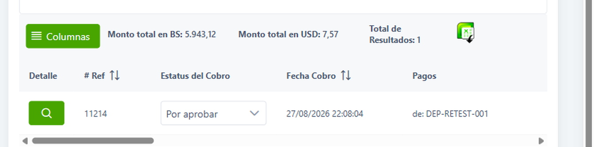
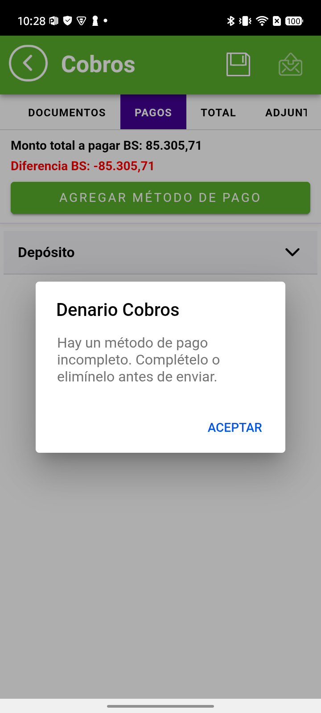

CONTROL DE CALIDADValidación de fixes
27 de agosto de 2026
27 de agosto de 2026
Módulo de Cobros · Denario Premium Móvil · rama Fixes-21 · Cliente GLOBAL M&P
| Qué se validó | Dos fixes montados hoy: la moneda del anticipo automático y las alertas al enviar un cobro incompleto |
| Cliente y playa | COMERCIALIZADORA DE ALIMENTOS GLOBAL M&P, C.A. · Isla Coche · empresa 00002 |
| Build | rama Fixes-21 · commit 9e5bfdfe «enhance currency handling and automated prepaid message logic» |
| Evidencia | 3 cobros enviados y 3 anticipos generados por el sistema (11213 – 11218) |
En Empresa → Configuración → Cobros hay dos ajustes distintos, y son la referencia de esta validación:
| Ajuste | Valor | Qué controla |
|---|---|---|
| ¿En qué moneda debe generarse el anticipo automático? | USD | 🔑 la moneda en la que se crea el anticipo |
| Moneda para evaluar el monto mínimo excedido | USD | la moneda en la que se decide si se crea |
| Monto mínimo excedido | 5 | el umbral, en la moneda anterior |
La aplicación respetaba el segundo ajuste pero ignoraba el primero: convertía a dólares para decidir si crear el anticipo, pero luego lo creaba en la moneda del cobro. Un cobro en bolívares producía un anticipo en bolívares, contra lo que dice la configuración.

| Cobro | Moneda del cobro | Monto | Anticipo | Moneda | Monto |
|---|---|---|---|---|---|
11213 | Bolívares | 8.000,00 | 11214 | USD | 7,57 |
11215 | Bolívares | 61.000,00 | 11216 | USD | 8,19 |
11217 | Dólares | 96,00 | 11218 | USD | 6,01 |
Los dos cobros en bolívares generaron su anticipo en dólares. Antes, un caso equivalente produjo un anticipo de BS 4.945,56.
No basta con que la moneda sea la correcta: el importe también lo es.
No basta con que la aplicación lo muestre bien: se comprobó que los seis registros llegan a la web administrativa con la moneda y el importe correctos.

11214 en la web: Monto total en USD 7,57, con su
equivalente BS 5.943,12. Nació de una cobranza en bolívares.| Registro | Tipo en la web | Monto | Diferencia del cobro |
|---|---|---|---|
11213 | Cobros | 8.000,00 BS | 5.943,12 BS = 7,57 USD |
11214 | Anticipo/Prepago | 7,57 USD | — |
11215 | Cobros | 61.000,00 BS | 6.429,78 BS = 8,19 USD |
11216 | Anticipo/Prepago | 8,19 USD | — |
11217 | Cobros | 96,00 USD | 6,01 USD |
11218 | Anticipo/Prepago | 6,01 USD | — |
🔑 La web valida la conversión por sí sola. Para el cobro 11213, hecho en
bolívares, la propia web muestra su diferencia convertida: 7,57 USD — exactamente el importe del
anticipo que generó. Los tres pares cuadran igual, y todos aparecen clasificados como
«Anticipo/Prepago».
Se comprobó que la aplicación impide enviar un cobro cuyo método de pago esté incompleto, en cinco escenarios:
| Caso | Escenario | Resultado |
|---|---|---|
| A1 | Cobro sin guardar, sin monto | ✅ bloquea |
| A2 | Cobro sin guardar, sin referencia | ✅ bloquea |
| A3 | Cobro sin guardar, ambos vacíos | ✅ bloquea |
| A4 | Cobro guardado y reabierto, incompleto | ✅ bloquea |
| A5 | Cobro completo | ✅ envía |
El mensaje es el mismo en los cuatro casos que bloquean:

Detectado por QA revisando la pantalla completa del anticipo 11210 en el teléfono. Es un
defecto distinto del que se estaba validando, y no se buscaba: apareció al comparar dos cifras que
deberían coincidir.
En la misma pantalla del anticipo, dos importes que representan lo mismo no coinciden:
| Dónde | Muestra | |
|---|---|---|
| Aplicación móvil — Total Depósitos | 5.354,18 | ← descuadra |
| Aplicación móvil — detalle, Monto Bs | 5.352,52 | |
| Base de datos | 5.352,52 | ✔ |
| Web administrativa | 5.352,52 | ✔ |
Diferencia: 1,66 Bs.
Es un error de redondeo amplificado por la tasa. El anticipo se guarda en dólares con dos decimales, y «Total Depósitos» recalcula multiplicando ese valor ya redondeado por la tasa, en vez de mostrar el importe en bolívares que la propia aplicación ya tiene guardado.
Con una tasa de 785 bolívares por dólar, medio céntimo de dólar se convierte en 1,66 bolívares visibles en pantalla. A mayor tasa, mayor el descuadre.
Que «Total Depósitos» muestre el importe en bolívares que ya está almacenado
(5.352,52), en lugar de recalcularlo a partir del valor redondeado en dólares. El dato
correcto ya existe: sólo se está mostrando otro.
También detectado por QA, al reabrir un cobro ya realizado y entrar a su pestaña de totales.
Al consultar el cobro terminado, la aplicación móvil muestra como total a pagar el importe completo depositado, incluyendo la parte que se destinó al anticipo. La web muestra el importe correcto.
El anticipo se genera como un documento aparte, precisamente para separar ese excedente. Si el cobro sigue mostrándolo dentro de su total, ese importe queda contado dos veces a ojos de quien lo lee.
11213| Concepto | Importe | Qué es |
|---|---|---|
| Depositado por el cliente | 8.000,00 Bs | lo que entregó en total |
| Aplicado a documentos | 2.056,88 Bs | 🔑 lo que este cobro realmente saldó |
| Excedente | 5.943,12 Bs | se convirtió en el anticipo 11214 (7,57 USD) |
| Dónde | Muestra como total | |
|---|---|---|
| Web administrativa | 2.056,88 Bs | ✔ correcto |
| Aplicación móvil (al reabrir el cobro) | incluye el anticipo | ✗ suma de más |
2.056,88 Bs en este caso—, tal como ya hace la web.
Que la pestaña de totales del cobro consultado muestre el importe aplicado a documentos, no el depositado. Es el mismo criterio que ya usa la web, y el dato está disponible: la base de datos lo guarda separado del importe total.
| Cubierto | No cubierto |
|---|---|
|
· Anticipo desde cobranza en bolívares (2 casos) · Anticipo desde cobranza en dólares · Verificación en pantalla, aplicación, base de datos y web · Comportamiento del umbral mínimo · Los 5 escenarios de alerta al enviar · Aritmética de la conversión |
· La empresa 00001 HC TRADING· Otros métodos de pago además de Depósito y Transferencia · Anticipos con retención o IGTF de por medio · Qué ocurre si la tasa cambia entre guardar y enviar |
anticipo_retest_20260827.anticipo-retest.md.
Cobros de evidencia: 11213 a 11218.